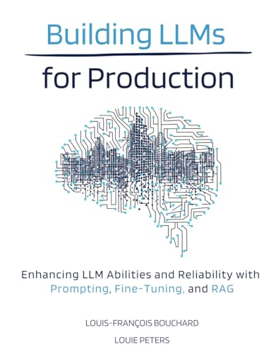

Writing / Book review
Building LLMs for Production: Prompting, Fine-Tuning, and RAG
I read Bouchard and Peters on LLM reliability: prompting, fine-tuning, RAG, agents, and evaluation, judged on one test, whether answers are correct, fast, and cheap enough to serve.

- Book
- Building LLMs for Production: Enhancing LLM Abilities and Reliability with Prompting, Fine-Tuning, and RAG
- Author
- Louis-Francois Bouchard and Louie Peters
- Publisher
- Towards AI, 2024
- ISBN
- 9798324731472
- Assessment
- ★★★★☆ 4.0/5
provisional, based on public materials
VerdictA practical production guide centred on evaluation, strongest on reliability at serving scale, with tool details to verify against current versions.
I came to this book for one thing: what changes when an LLM leaves the demo and has to serve real users day after day. Mostly, Bouchard and Peters give me that answer. They build the whole book around a single production question, put evaluation where it belongs, at the centre, then leave the part the title promises most, deployment, thinner than it should be. That split is the book in one sentence, worth knowing before the first chapter.
The edition I read is the Towards AI edition of 21 May 2024, 465 pages, ISBN 9798324731472. Towards AI is an independent publisher, not O'Reilly, Manning, or Packt, and the book is self published through that route. The upside is a book that arrived while the subject was still hot. The downside is that a 2024 book about LLM tooling ages in dog years, so check the tool details against current documentation before copying anything.
The question the book asks
The whole book hangs on one production question. Is an answer correct, fast, and cheap enough to serve at scale? The three conditions pull in different directions, and that tension is the point. A system can do well on a small test set and still fail in production, because it is too slow, too costly, or too brittle on inputs nobody tested. A system can also be fast and cheap and still fail, because it gives fluent answers that are wrong in ways that matter. Prompting, retrieval, fine tuning, RAG, agents, and evaluation are all ways to manage that tension, not techniques to collect, and each is a lever with a cost attached.
That framing gave me a clear order of work. Most LLM projects start with a demonstration that looks strong, and real use then exposes gaps in input, retrieval, model updates, and usage. This book tries to show me those problems before they become incidents, by placing evaluation at the centre rather than treating it as an afterthought.
The three part test keeps the assessment honest, because no single technique wins in every case. Prompting is cheap to change and easy to test, but it can be brittle. Retrieval can ground an answer in current or private information, but it adds another system to operate, and another way to fail. Fine tuning can make a behaviour stable, but it adds a training and versioning lifecycle. Agents can carry out multi step work, but they add planning, tool, and state failures.
| Goal | What it costs | When it matters |
|---|---|---|
| Correct | Extra checks, better retrieval, more review time | When a wrong answer harms a user or a decision |
| Fast | Simpler paths, smaller models, less context | When users wait on every reply |
| Cheap | Fewer tokens, fewer calls, cached work | When usage grows and the bill follows it |
I rarely get all three at once, so for a given task I name the condition I cannot give up first, then state the trade that follows plainly.
Prompting as the first intervention
Prompting is the fastest way to change what a model does, and the book treats it as a starting point, not as the whole answer. A prompt can state the task, the format, the sources to use, and what the system should not claim, show examples, and ask for structured output that code can check. Those are real controls, and I test them before committing to heavier work.
Prompting also has limits, and the book does not hide them. A prompt cannot add facts the model does not have, or force the model to follow an instruction every time. Longer prompts can help, and they can also cost more, run slower, and bury the instruction that matters. A prompt that works one day can behave differently after a model update. I treat a prompt as a versioned part with tests, not as a fixed string.
I treat prompting as an experiment with a defined result. I write down the task, the success condition, and the failure modes before changing the prompt. I keep a fixed set of cases, including ones where the answer is absent or the request should be declined, change one element at a time, and record the result. Prompting is valuable not because it is easy but because it is cheap to test, and a test can prevent a larger investment in the wrong fix.
The comparison above is a decision aid, not a claim that the book prescribes exactly these branches. The point is the order of work: I test whether a clearer instruction, a better retrieved passage, or a stricter output check solves the problem before building a training set. When prompting solves the problem, I save time and avoid a new system to maintain. When it does not, the failure tells me why, and that evidence guides the next choice.
Retrieval and RAG
Retrieval augmented generation, or RAG, grounds a model in information that is current, private, or too large to place in a prompt. The idea is simple and the operation is difficult. Documents are split into usable pieces, stored so they can be searched, and the passages that fit the question are retrieved before an answer is generated from them. Each step can fail in a way that looks like a model error. Often the cause is a retrieval error in disguise, and the model takes the blame, which is unfair to it and, frankly, a little flattering.
The book treats retrieval as a pipeline, not as a single call to a vector store. That distinction matters: I have to decide which documents are in scope, how they are updated, how permissions are enforced, and how the system behaves when no passage answers the question. A system that always answers, even when the retrieved material is weak, produces fluent answers that are not supported. One that declines too often is unusable. The balance depends on the stakes and on what the user can check.
Chunking and retrieval quality deserve the same attention as generation quality. A passage that is too long can hide the relevant sentence; one that is too short can lose the context that makes it true. A retriever that ranks by topical similarity can return a passage that is on topic but does not answer the question. I inspect retrieved passages separately from generated answers, so a correct answer does not hide a weak retriever, and a good retriever is not blamed for a generation error. That separation is a practical debugging habit that also makes evaluation more precise.
RAG also creates operational work that a demonstration can hide. An index must be rebuilt or updated when documents change; a stale one can serve old policy or old prices with confidence. Access control must be enforced at retrieval time, not only at the user interface. Logs can contain sensitive user input and retrieved material, so retention and access need a policy. Those are system problems, not model problems, and the book names them.
Fine-tuning
Fine-tuning is the point where many teams move from using a model to owning a model version. The book treats it as a way to make a repeated behaviour reliable, and to adapt a model to a task, a format, or a domain where prompting and retrieval fall short. That framing sets a useful threshold: I fine-tune only after lighter methods have been tried and the remaining failure is stable enough to learn from examples.
The work before training matters more than the training call itself. I need clean examples to show the desired behaviour, held out cases to tell whether the model learned the task or memorised the examples, and a rubric for what counts as correct, incomplete, or a harmful error. Without that rubric, a training run can improve a score that does not reflect user value, and I will not know until the system is live.
Fine-tuning also creates a lifecycle. A tuned model is a versioned artifact with data, code, evaluation results, and a deployment record. When the base model, the task, or the data changes, I have to decide: retune, keep the old version, or return to prompting and retrieval. That decision should rest on evaluation, not habit. A tuned model can also encode stale information, or overfit to a narrow format and fail on a slightly different one.
The book's emphasis on production makes this concrete. A fine-tuned model is not finished when training completes, but when it can be served with known latency and cost, failures are monitored, and a defined path back to a safe version exists if performance degrades.
Agents as a composed system
Agents extend the production question from one model call to a loop: plan, use a tool, observe the result, and continue. An agent is not a stronger prompt. It is a system with state, permissions, and failure modes a single call never has. A loop with no limits on steps, time, retries, or tool access becomes costly, slow, and difficult to debug.
The question for me is when the loop adds value a deterministic workflow cannot provide. A fixed sequence of steps is often enough for a well defined task, and it is easier to test, trace, and control. An agent loop is useful when the next step depends on the result of the last step in a way that cannot be fixed in advance, or when the task needs searching, trying, and revising. Even then, the loop needs a goal, a stopping rule, and a way to hand off to a person when safe progress is not possible. Without those controls, an agent can repeat a failing action, call a tool with the wrong arguments, or produce a confident summary of work that did not happen. It will do all of that with great confidence and no sense of embarrassment, which is the most human thing about it.
Tool use deserves special care. A tool call is an action, not a sentence: it can read, write, send, or delete, depending on the tool. A production agent needs authorisation for each tool, validated arguments, limits on what it can do, and logging that can be audited. Retrieved documents and tool outputs can also be untrusted inputs, and an agent that follows instructions found in retrieved text can be misled. Those are security and reliability concerns, not only model quality concerns.
Evaluation as the central theme
Evaluation is the heart of this book, and the strongest reason I would hand it to another engineer. The question is not whether a model can give one good answer, but whether the system keeps giving answers that are correct, fast, and cheap enough to serve, on cases that resemble real use. That takes a test set, a rubric, and a habit of sorting failures by cause instead of averaging them away.
A useful evaluation starts with a definition of success. For a question answering system, success might mean the answer is grounded in a retrieved passage, complete, and in the required format. Without that definition, a score can look scientific while measuring only what was easy to count.
Different methods have different blind spots. Exact match suits constrained outputs but punishes harmless wording variation. Similarity measures can reward topical resemblance without confirming correctness. Human review captures context but needs clear rubrics and consistency checks. Model based judges scale comparisons, but their preferences, prompt sensitivity, and correlated errors need auditing. I do not treat any evaluator as an oracle simply because it returns a numeric score. A number with two decimal places is still a guess wearing a suit. I use more than one method, and keep human inspection for failures an automatic check cannot detect.
The loop above is the practical core of the book's argument. A baseline matters because a change means nothing without a comparison. Fixed cases matter because a fresh test set can hide a regression. Sorting failures by cause matters because an average can hide one small failure class that causes real harm. With that loop in place, I can decide about prompts, retrieval, fine-tuning, and model choice with evidence rather than on the strength of a demonstration.
The loop does not end with a single release. Each round of shipping, observation, learning, and repair should be cheaper to test and easier to explain than the last.
A production request with a check in the path shows how that discipline works in practice. The check is not decoration; it is the step that stops a fluent but unsupported answer from reaching the user.
I read the sequence with the check in mind. If the retriever returns nothing useful, the application should say so, or decline, instead of letting the model fill the gap with a confident guess. If the answer does not line up with the passages, the application should catch the mismatch before responding. That is the production habit the book returns to throughout.
Evaluation also needs to cover cost and latency, not only quality. A change that improves quality but doubles latency may be a poor trade for an interactive product, and one that improves quality on common cases but fails on rare and important cases may be a poor trade for a high stakes one. I record quality, latency, and cost together, on the same cases, so the trade off is visible.
Strengths, limitations, and what it will not teach
The strength of the book is focus. It does not try to cover all of machine learning, only the production path for LLM applications, with evaluation as the test that ties the rest together. For someone who already knows software systems and wants a disciplined path through prompting, retrieval, fine-tuning, RAG, agents, and serving, the sequence hangs together. Correct, fast, and cheap enough to serve is a simple yardstick, and it works for judging every technique on the same terms.
A second strength is that the book treats production as a system, not a single model call. Retrieval, generation, validation, logging, and monitoring are connected, and a failure in one part can look like a failure in another. The study value lies in that separation, even when the specific tools in the book have changed. What I liked most, alongside the focus, is the breadth done properly: comprehensive, well-structured coverage from introduction through prompting, RAG, and fine-tuning, hands-on code with Colab notebooks and real examples, and clear chapters on evaluation, quantisation, and fine-tuning.
The central limitation is the one that bothered me most. For a book with "for Production" in the title, the deployment coverage is thin. One chapter. No real depth on hosting, serving infrastructure, guardrails, routers, gateways, caching, or observability. That is the whole job the title promises, and the book walks past most of it. The deployment chapter is where the book falls short, and it falls short plainly. I wish the authors had given deployment the same care they gave evaluation.
A related limitation is time. The book was published in May 2024, and model names, library interfaces, hosted service behaviour, and pricing have moved since. The code leans heavily on LangChain, and that code has aged worst of all; what was current in 2024 now reads as a snapshot of a framework that moved on. The book is broad rather than deep, a fair trade for a survey, but depth on any one topic needs a second source. The telling detail is that the authors agree. They did not write a second edition; they wrote a new book, AI Engineering For Production, because almost the entire conversation had moved. When the authors themselves start over rather than revise, I take it seriously.
A further limitation is publication context. Towards AI is an independent publisher, and the book is self published through that route. That route can produce a timely and practical book, but it does not carry the same editorial and revision process as a larger technical publisher. I am therefore more careful about claims tied to a specific version, service, or benchmark.
The book should also not be mistaken for a detailed course in transformer implementation, large scale pretraining, advanced optimisation, safety governance, or one deployment platform. For model internals and hands on construction, Sebastian Raschka's Build a Large Language Model (From Scratch) has a different focus. For a broad framework for foundation model applications, Chip Huyen's AI Engineering is complementary. For a deeper LLMOps pipeline, the LLM Engineer's Handbook in this same review batch is a useful comparison. None of those replaces security, privacy, legal, accessibility, and domain specific review for a real application.
A practical study plan and exercise
My study plan is to read with one concrete application in mind and keep the three part test in view throughout. First I write down the user task, the stakes, and what counts as success. As the book moves through prompting, retrieval, fine-tuning, RAG, agents, and evaluation, I record the decisions that apply and the risks that remain. I do not implement every technique because it appears in a learning path. The point is a reasoned decision process, not a maximal stack.
For a first exercise, I build a small document question answering prototype on a fixed set of public documents. I draft twenty questions, including ones whose answer is absent, and set the criteria for grounded, incomplete, or unsupported. I compare direct prompting with retrieval, inspect retrieved passages separately from the generated response, add a structured output check, and record latency and tokens. Then I alter one component at a time and keep the test cases.
For a second exercise, I build an evaluation set for a single task and use it to compare two approaches. I include normal and edge cases, write a rubric before seeing outputs, and add human inspection for failures an automatic check cannot detect. I record quality, latency, and cost together, then change the prompt, the retrieval settings, or the model, and rerun the same cases. The lesson is how to make a repeatable comparison, and how to spot when a change has helped one class of cases and harmed another.
A third exercise focuses on failure handling: I test a working prototype with a missing document, a contradictory passage, a malformed tool result, and a request that should be declined, and record whether each response is safe, clear, and traceable. That exercise teaches the most useful production lesson in the book. A system is not ready because it works on good inputs. It is ready when behaviour on bad inputs is defined, tested, and logged.
Who should read it and how it compares
Software engineers, ML practitioners, and technical leads who need to move an LLM prototype toward a service that can be operated are the likely audience. Someone who only wants prompt examples may find the scope broader than necessary, and someone who wants to derive attention equations or train at scale will need a more technical companion. I find this book most useful as a production manual for a team with a use case that needs to be made reliable.
Compared with AI Engineering, this book is narrower and more focused on the production test. Huyen covers the wider application lifecycle, including framing, adaptation, and inference, with a systems view that helps a team organise its work. This book makes evaluation and reliability the centre, and suits someone who wants to go deeper on that test before choosing a technique. The two books can be read together: Huyen for the map, this book for the production discipline that keeps the map honest. See the earlier review at ../review-ai-engineering/ for that wider framing.
Compared with the LLM Engineer's Handbook, this book is shorter and less tied to one end to end pipeline with a fixed tool stack. The Handbook gives a detailed LLMOps path through RAG, fine-tuning, evaluation, and deployment as microservices, with specific tools to follow. This book gives a broader production survey that works with different tools, and serves as a checklist for a team that already picked its stack. See the new review at ../review-llm-engineers-handbook/ for that comparison.
Length is one honest difference between the two, and it is worth showing plainly. The counts below are publisher figures, not estimates: this book is 465 pages per Towards AI, and the LLM Engineer's Handbook is 522 pages per Packt.
Longer does not mean better here. It means more worked pipeline detail in the Handbook, and a tighter production checklist in this book. The choice should follow what is needed next, not page count alone.
Compared with the scratch built GPT path by Raschka, this book is about operating applications around models, not learning model mechanics by implementing them. That difference is a matter of purpose, not quality. Someone who wants to understand attention, training, and fine-tuning from the inside should start with Raschka.
Further reading and public sources
- Towards AI, the publisher site, for the current edition and companion materials.
- AI Engineering, a wider framing of foundation model applications on this site.
- LLM Engineer's Handbook, a detailed LLMOps pipeline review in this same batch.
Verdict
My rating: 4.0 out of 5. The central test still holds. Is an answer correct, fast, and cheap enough to serve at scale? That one question gives a clear way to judge prompting, retrieval, fine-tuning, RAG, and agents on the same terms, and the book earns its score on that focus, above all on evaluation and reliability. What holds it back is the deployment gap: a book called Building LLMs for Production should spend more than one chapter on actually running things in production, and the 2024 tool details need checking against current sources. I would still hand it to an engineer who needs to make an LLM system reliable, and just warn them, first, about the chapter that is not there.